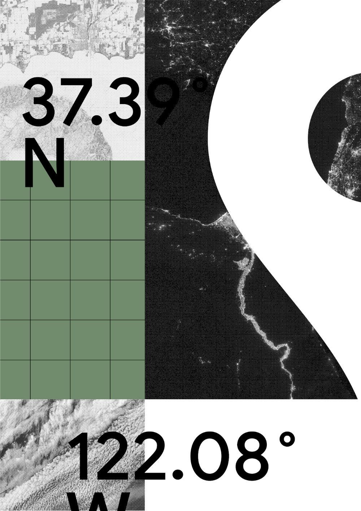
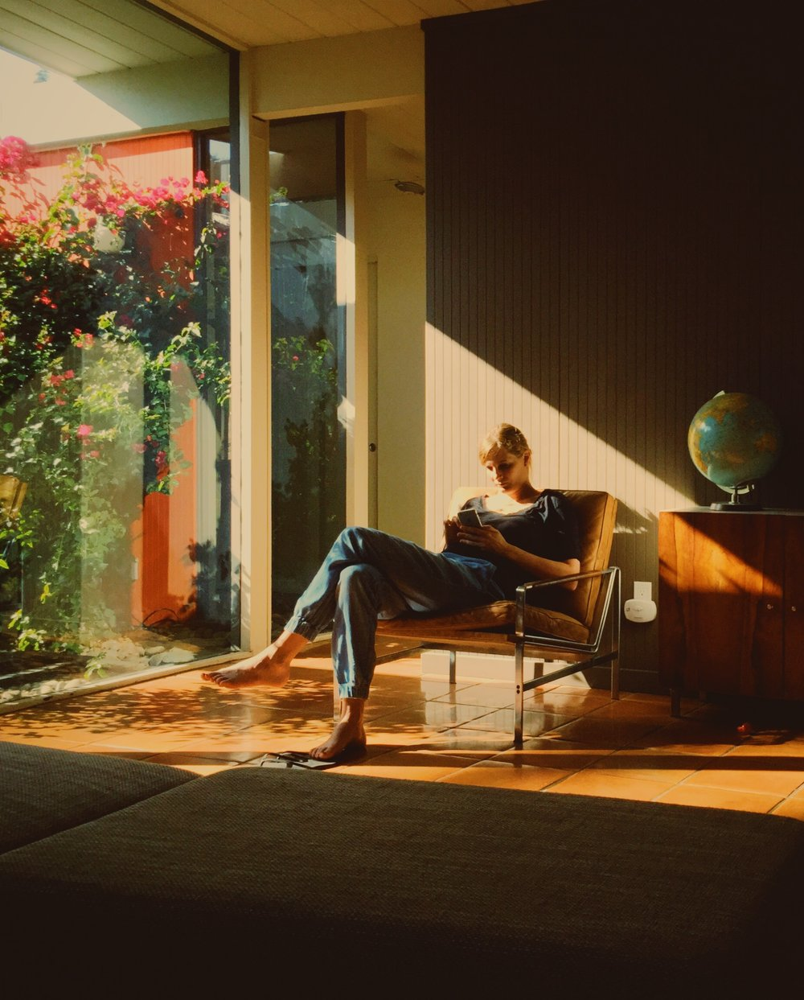
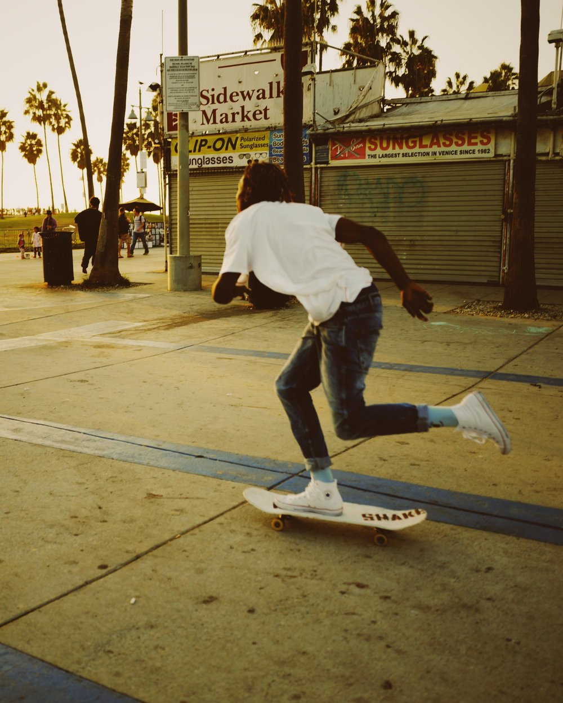

Sang Han is a California-based photographer and design leader focused on creating rich digital product experiences. He communicates through unique concepts that deliver compelling stories. His ultimate goal is to solve complex problems through ideas that translate into thoughtful design solutions to help and delight his audience.
PHOTOGRAPHY & DESIGN

DESIGN DIRECTION
My design experience spans from large brands like Google, Apple and Facebook to numerous award winning digital agencies like DDB. From helping to launch flagship products at Apple to evolving a billion user experience in Google Maps, I have had the honor and privilege to work on some of the most iconic products in the world.
Detailed case studies and resume available upon request.




Photography - places
Photography's ability to capture the most precious moments throughout my life are one of the most cherished artifacts I own. The stories they tell and the memories that last are truly worth a thousand words. It's a hobby that has turned into a life passion project.
→ View more in the Journal




